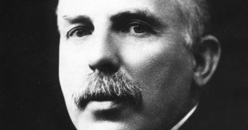
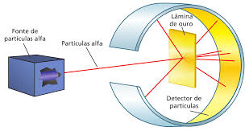

O planetário
O modelo atômico de Rutherford, proposto em 1911, foi um marco na história da ciência. Através de um experimento inovador, Rutherford sugeriu que o átomo tem um núcleo central denso e carregado positivamente, com elétrons orbitando ao seu redor de maneira semelhante ao Sistema Solar.
Quem foi Ernest Rutherford
Ernest Rutherford foi um físico neozelandês que se tornou um dos principais nomes da ciência moderna. Conhecido como o 'Pai da Física Nuclear', Rutherford foi fundamental para desvendar a estrutura do átomo e descobrir o núcleo atômico.

O Experimento de Dispersão de Partículas Alfa
Em 1911, Rutherford conduziu um experimento clássico utilizando partículas alfa (núcleos de hélio) e uma fina lâmina de ouro. O que ele observou foi surpreendente: a maioria das partículas alfa passava pela lâmina sem sofrer desvio, mas algumas se desviavam em ângulos grandes. Isso sugeria a presença de uma região central, pequena e densa dentro do átomo, carregada positivamente — o núcleo.

O Modelo Atômico de Rutherford: O Sistema Solar em Miniatura
O modelo atômico proposto por Rutherford em 1911 sugere que o átomo é composto por um pequeno núcleo denso, onde está concentrada a carga positiva, e uma região externa onde os elétrons se movem em órbitas, semelhantes aos planetas em torno do Sol. Essa concepção revolucionou o entendimento do átomo e foi um precursor importante para o modelo atômico de Bohr.

Legado de Rutherford para a Ciência
O modelo de Rutherford abriu caminho para novas investigações sobre a estrutura atômica e a descoberta da radioatividade. Seu trabalho foi um divisor de águas, preparando o terreno para modelos mais complexos, como o de Bohr, que adicionou uma explicação mais detalhada sobre as órbitas dos elétrons. O legado de Rutherford também é fundamental para o campo da física nuclear.